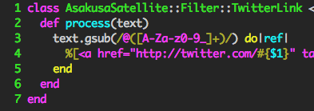
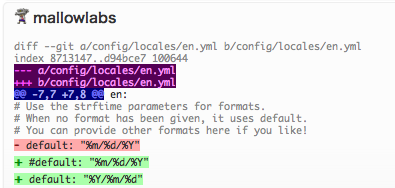

AsakusaSatellite とは
AsakusaSatellite は、開発者向けのリアルタイムチャットアプリケーションです。開発者間のコミュニケーション品質を向上し、ソフトウェア開発にリズムをもたらします。
コミュニケーションを
加速する
AsakusaSatellite
特徴
-
リアルタイムコミュニケーション

-
D＆Dによるファイルアップロード
-
iPhone UI
-
プラグインによる拡張
 -
ソースコードのシンタックスハイライト
 -
Redmine のチケットリンク
-
全文検索
動作環境
- Ruby 1.8.7
- RubyGems 1.4.2 or later
- Bundler 1.0.7 or later
- Google Chrome 9 or later (クライアント)
インストール
以下のコマンドを実行した後 http://localhost:3000/ にアクセスしてください。
$ git clone git://github.com/codefirst/AsakusaSatellite.git $ cd AsakusaSatellite $ cp config/filter.yml.example config/filter.yml $ cp config/websocket.yml.example config/websocket.yml $ cp config/settings.yml.example config/settings.yml $ bundle install --path vendor/bundle $ bundle exec rake groonga:migrate $ ruby websocket/server.rb & $ bundle exec rails server
注意事項
- unsupported column エラーが発生する場合がありますが、問題ないので無視してください。
- MeCab がインストールされている環境では、正しく動作しない場合があります。 vendor/bundle 以下に groonga をインストールし直してください。
要望の出し方
@mzp まで送っていただくか、 Github の issues に登録していたければ、対応します。